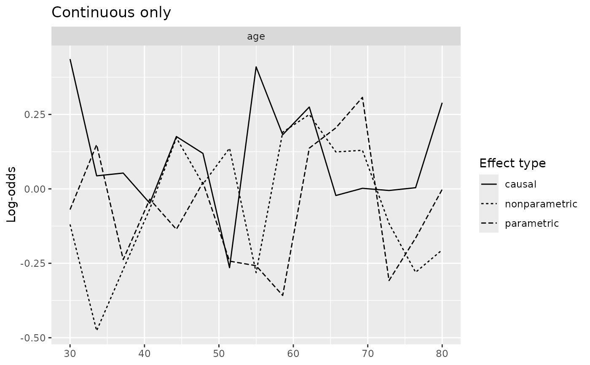
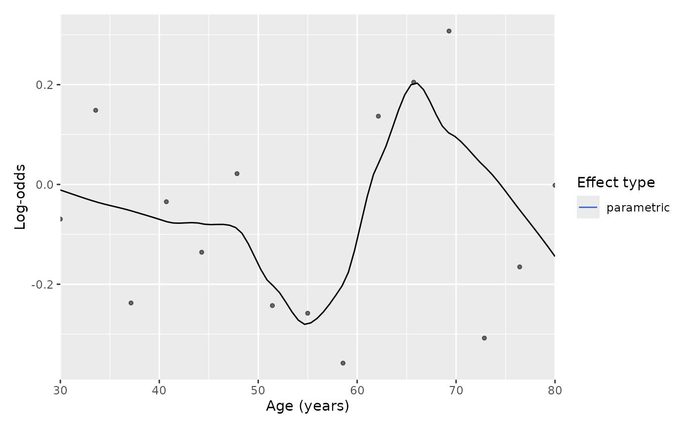
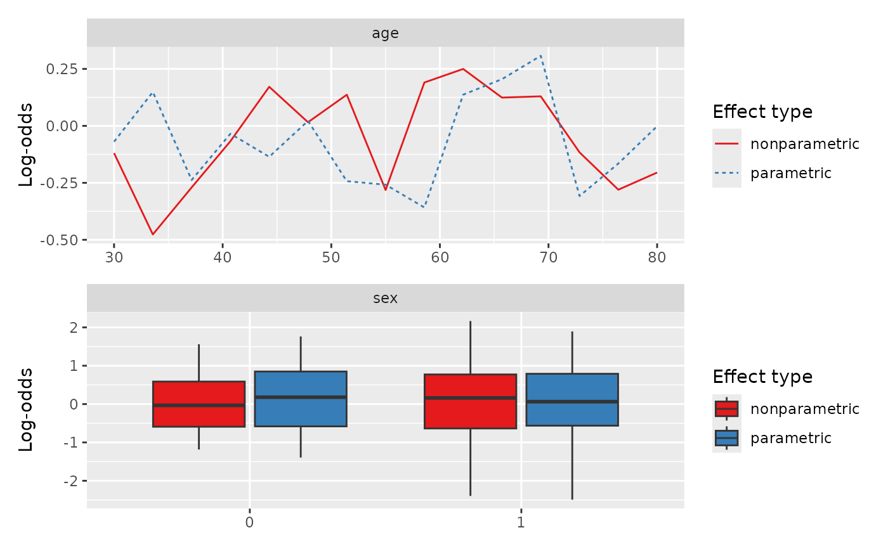
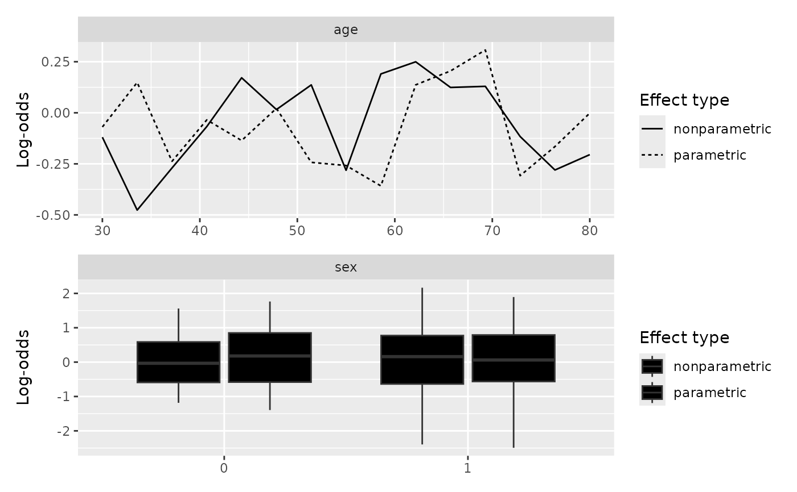
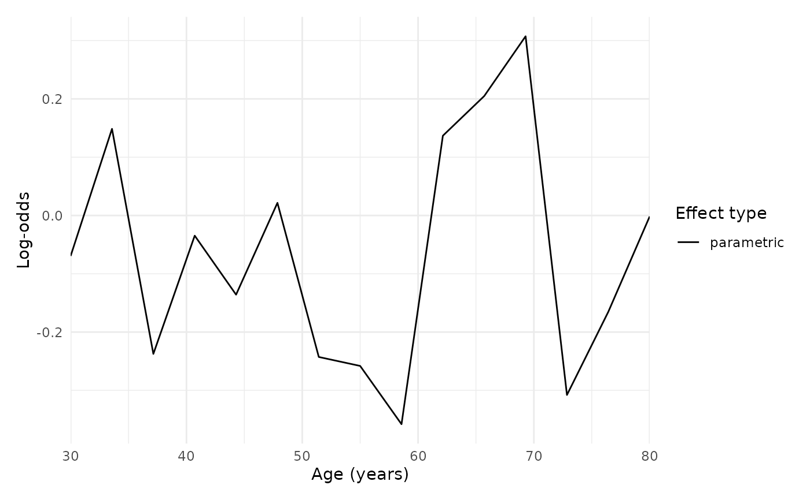
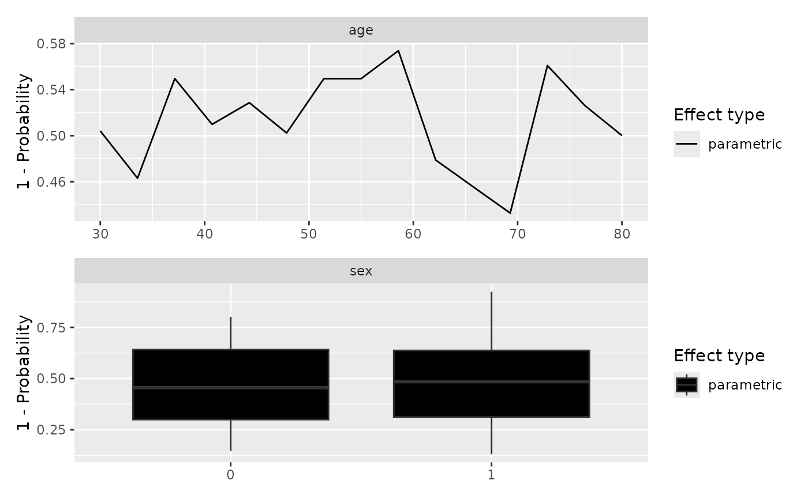

Plot a gg_partial_varpro object
Source: R/plot.gg_partial.R, R/plot.gg_partial_varpro.R
plot.gg_partial_varpro.RdDraws the partial dependence curves from the list that
gg_partial_varpro returns. Continuous predictors get
overlaid line curves, one per effect type; categorical predictors get
side-by-side boxplots. Survival path-C objects (the ones you get when
scale %in% c("surv","chf") was passed to the extractor) are
handed off to plot.gg_partial_rfsrc for drawing.
Usage
# S3 method for class 'gg_partialpro'
plot(x, type = c("parametric", "nonparametric", "causal"), labels = NULL, ...)
# S3 method for class 'gg_partial_varpro'
plot(
x,
type = c("parametric", "nonparametric", "causal"),
labels = NULL,
...,
which = c("both", "continuous", "categorical"),
panels = NULL,
points = FALSE,
smooth = FALSE,
palette = "black",
ncol = NULL,
point_size = 1.1,
point_alpha = 0.55,
linewidth = 0.5,
complement = FALSE,
ylim = NULL
)Arguments
- x
A
gg_partial_varproobject.- type
Character vector; one or more of
"parametric","nonparametric","causal". Defaults to all three. Ignored for path-C objects.- labels
Optional variable labels for the facet strips. One of: a named character vector (
c(bpd_last = "BP Diastole")); a labelled data frame, whoseattr(col, "label")values are read; or a two-columnkey/labeldata frame. Variables with no label keep their raw name. Defaults toNULL(raw names).- ...
Unused for path-A objects; forwarded to
plot.gg_partial_rfsrcfor path-C objects.- which
Character; which frame to draw.
"both"(default) keeps the historical behaviour, returning a patchwork stack when the object carries both continuous and categorical variables."continuous"or"categorical"returns a bareggplotfor that frame alone. Use it when you want to add scales or themes with+: on a patchwork+reaches only the last panel, sowhichis how you get one plot to modify. Implied bypanels.- panels
Optional data frame giving per-panel scales, one row per panel. Supplying it selects the continuous frame and switches rendering from
facet_wrap()to patchwork, which is the only way to vary the x scale between panels. Onlynameis required; every other column is optional and an absent one leaves that decision to ggplot2.- name
variable, matched against
x$continuous$name. A name the frame does not carry is an error rather than a silent drop.- xlab
panel x axis title. Falls back to the
labelsvalue for that variable, then toname.- xmin, xmax
clipped range, applied with
coord_cartesian()so points outside are hidden rather than dropped from the smooth. Supplying both also removes the axis padding.- xby
tick spacing, expanded to
seq(xmin, xmax, xby).- span
per-panel
geom_smooth()span.
Panels are drawn in row order, so the frame pins panel order explicitly. A variable absent from
panelsis not drawn; selecting a subset is the usual reason to supply it.The y axis is shared across panels, matching the facet route, and is computed over the selected variables only – so dropping a variable rescales the figure. Only the x scale varies between panels; four partial dependence curves on four different y ranges would not compare.
- points
Logical; add the grid-point values as points. Default
FALSE.- smooth
Logical; draw a
geom_smooth()loess instead of the line. DefaultFALSE. Note thatparametricis already partialpro's local-polynomial fit, so smoothing it is a smooth of a smooth; this is here for the raw-looking figure some journals ask for, not as a better estimate.- palette
Character; the effect-type colour or fill scale. Defaults to
"black": this package's figures are made for manuscripts, andlinetypeis mapped to the effect type as well, so the three estimators stay legible as solid, dotted and dashed with no colour at all."mono"is a synonym, and"grey"/"gray"give a flat grey. Any ColorBrewer palette name (e.g."Set1") routes to the brewer scale instead, which is worth reaching for when you are comparing two or three estimators on screen and colour separates them faster than a dash pattern.NULLkeeps ggplot2's own scale.- ncol
Integer; columns in the
panelslayout.NULL(default) lets patchwork choose.- point_size, point_alpha
Numeric; size and alpha of the points drawn when
points = TRUE. Defaults1.1and0.55. Print figures usually want a smaller point than a screen figure.- linewidth
Numeric; width of the line or smooth. Default
0.5, ggplot2's own.- complement
Logical; plot \(1 - p\) instead of \(p\), and prefix the y axis label with
"1 - ". Use it when the fit targets the class you do not want on the axis – a model of weaning failure read as the probability of weaning success, say – so you do not have to recomputepartialproagainst the other target. Requires a probability scale (scale = "prob"or"surv"); on the additive, multiplicative and unbounded scales \(1 - x\) has no referent and this is an error rather than a silent no-op. DefaultFALSE.- ylim
Numeric length-2; the shared y range for every panel.
NULL(default) takes the range of the plotted values, which is what the facet route has always done. Supply it to pin a scale that means something independent of the data –c(0, 1)on a probability scale, say, so a flat curve reads as flat rather than filling the panel. It cannot be set from outside: on thepanelsroute acoord_cartesian()added with&replaces the per-panel coordinate system and takes the per-panel x ranges down with it, andscale_y_continuous(limits = )is overridden by that coordinate system.
Details
Ensemble mortality (scale = "mortality"): when the provenance scale
is "mortality", the y-axis is labeled
"Ensemble mortality (expected events)". The wording is
deliberate: this is an unbounded relative-risk score, not a
survival probability and not \(1 - S(t)\) (Ishwaran, Kogalur,
Blackstone & Lauer, 2008 doi:10.1214/08-AOAS169).
Reading the partial dependence
For a continuous variable the x-axis is the variable's grid of values
and the y-axis is the partial prediction; each of the three effect
types (parametric, nonparametric, causal) is
drawn as its own line. The shape of the line is the story: a clear
slope says the model uses the variable, a flat line says it
essentially does not, and a U-shape or a threshold says the effect
is nonlinear in a way a single coefficient would miss. For a
categorical variable the picture is a boxplot per level; here the
eye is looking at level-to-level shifts in the center of each box.
Where the three effect types track each other, the parametric story is a fair summary of what the forest is doing. Where they fan apart (typically the parametric curve smoother than the nonparametric, or the causal curve flatter than either) the variable is one to inspect more carefully before reading a single effect off the plot.
What this tells you
Use these curves to describe how the model uses each variable, not
to claim how the world works. They are a window into the fitted
relationship; they do not by themselves establish that intervening
on the variable would move the outcome. For survival path-C
(scale = "chf"), the y-axis is on the cumulative-hazard scale.
Reading a probability curve (scale = "prob")
The y-axis is \(P(Y = \mathrm{target})\), the model's predicted probability
of the target class as the focal variable varies (others held at their
UVT-plausible average). "odds" and "logodds" are the same
curve on the odds and log-odds scales. The causal curve is a
contrast (below) and is not shown on "prob"/"odds";
use "logodds" to see it.
Reading a survival-probability curve (scale = "surv")
The y-axis is \(S(\tau \mid x)\), the predicted probability of surviving past \(\tau\), bounded in \([0, 1]\) and read in the model's time units. Higher is better (more survival). \(\tau\) defaults to the median follow-up time when not supplied.
What the causal curve is, and when to use it
causal is the baseline-subtracted local effect – varPro's
virtual- ("digital-") twins estimator (Ishwaran & Blackstone, 2025). It
shows how the prediction shifts as the focal variable moves away from the
reference grid point, with the other covariates held at on-manifold
(UVT-plausible) values; it is a contrast (it starts at 0), not a
level. Use it when you want the local effect (change-from-baseline) rather
than the absolute predicted level, and as a cross-check on the parametric
and nonparametric curves. It is varpro's local estimator within the
fitted model, not a structural causal claim about the
data-generating process. Because it is a contrast it cannot share a
probability/odds axis with the absolute curves, so it is shown only on the
additive scales ("logodds", "mortality", "rmst").
Reading an RMST curve (scale = "rmst")
The y-axis is restricted mean survival time at horizon \(\tau\), \(\mathrm{RMST}(\tau)=\int_0^\tau S(t)\,dt\): the expected event-free time during the first \(\tau\) time-units, the area under the survival curve out to \(\tau\). Read it in the model's own time units, where it is bounded by \(0 \le \mathrm{RMST}(\tau) \le \tau\).
Two things follow. First, \(\tau\) must be given in the fit's time units; a \(\tau\) past the largest event time just truncates to the full restricted mean and stops changing. Second, higher is better here – more time event-free – which is the opposite of the ensemble-mortality scale.
A continuous variable's curve sloping up means higher values of that covariate buy you more restricted-mean event-free time within \(\tau\) (with the other covariates held at their UVT-plausible average); a flat curve means the covariate does not move it. Unlike ensemble mortality, RMST reads on a directly clinical scale, "so many event-free time-units within \(\tau\)", which is usually the one you want to report.
References
Ishwaran H, Kogalur UB, Blackstone EH, Lauer MS (2008). Random survival forests. The Annals of Applied Statistics, 2(3), 841–860. doi:10.1214/08-AOAS169 .
Ishwaran H, Blackstone EH (2025). Harnessing the power of virtual (digital) twins: Graphical causal tools for understanding patient and hospital differences. Computational and Structural Biotechnology Journal, 28, 312.
Examples
set.seed(42)
n_obs <- 30; n_pts <- 15
mock_data <- list(
age = list(
xvirtual = seq(30, 80, length.out = n_pts),
xorg = sample(seq(30, 80, by = 5), n_obs, replace = TRUE),
yhat.par = matrix(rnorm(n_obs * n_pts), nrow = n_obs),
yhat.nonpar = matrix(rnorm(n_obs * n_pts), nrow = n_obs),
yhat.causal = matrix(rnorm(n_obs * n_pts), nrow = n_obs)
),
sex = list(
xvirtual = c(0, 1),
xorg = sample(c(0, 1), n_obs, replace = TRUE),
yhat.par = matrix(rnorm(n_obs * 2), nrow = n_obs),
yhat.nonpar = matrix(rnorm(n_obs * 2), nrow = n_obs),
yhat.causal = matrix(rnorm(n_obs * 2), nrow = n_obs)
)
)
pp <- gg_partial_varpro(mock_data, scale = "logodds")
plot(pp)
 plot(pp, type = "parametric")
plot(pp, type = "parametric")
 ## The continuous frame alone, so `+` reaches the plot you meant.
plot(pp, which = "continuous") + ggplot2::labs(title = "Continuous only")
## The continuous frame alone, so `+` reaches the plot you meant.
plot(pp, which = "continuous") + ggplot2::labs(title = "Continuous only")

## Per-panel scales. Only 'name' is required; the rest tune one axis each.
spec <- data.frame(name = "age", xlab = "Age (years)",
xmin = 30, xmax = 80, xby = 10, span = 0.6)
plot(pp, type = "parametric", panels = spec, points = TRUE, smooth = TRUE)
#> `geom_smooth()` using method = 'loess' and formula = 'y ~ x'

## Colour earns its place when several estimators share a panel: two curves
## separate faster by hue than by dash pattern. Any ColorBrewer name works.
plot(pp, type = c("parametric", "nonparametric"), palette = "Set1")

## The default is monochrome, for print.
plot(pp, type = c("parametric", "nonparametric"))

## A patchwork takes `&`, not `+`, to reach every panel.
plot(pp, type = "parametric", panels = spec) & ggplot2::theme_minimal()

## complement = TRUE reads a failure model as its success probability.
pp_prob <- gg_partial_varpro(mock_data, scale = "prob")
plot(pp_prob, type = "parametric", complement = TRUE)
